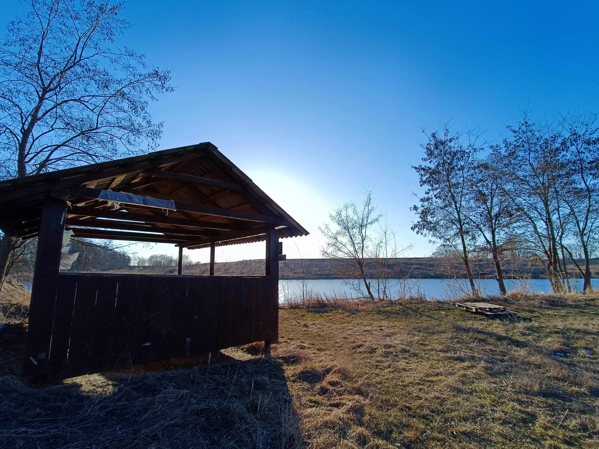
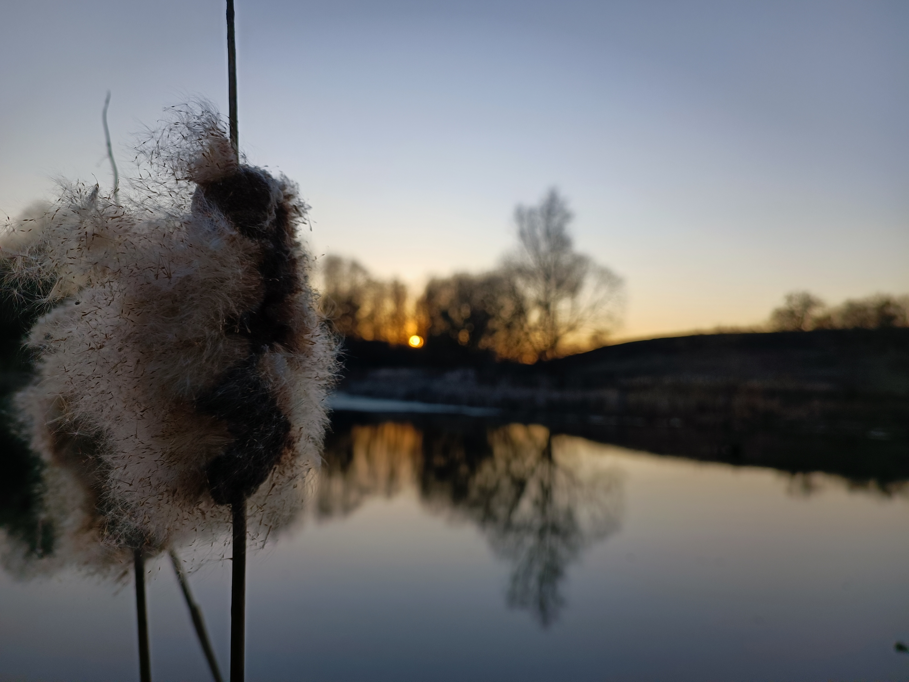
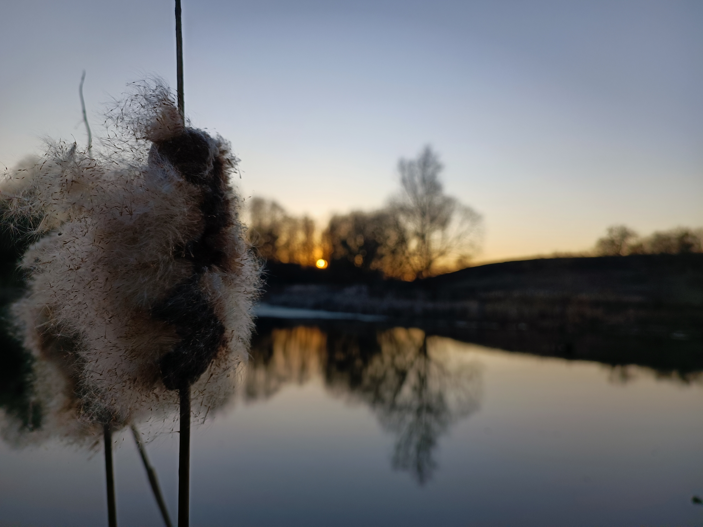

В селе есть большое количество озёр и все они имеют свои особенности. Есть как маленькие озёра, которые переодически пересыхают, так и большие. На данный момент 2 озера используются как разводники рыбы. Ниже представлен список озёр, где нажав на название можно перейти на страницу с более подробной информацией о водоёме:
Ниже будут представлены фото озёр, нажав на которые так же можно перейти на страницу с более подробной информацией
 
